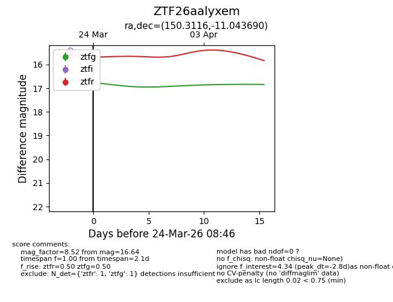
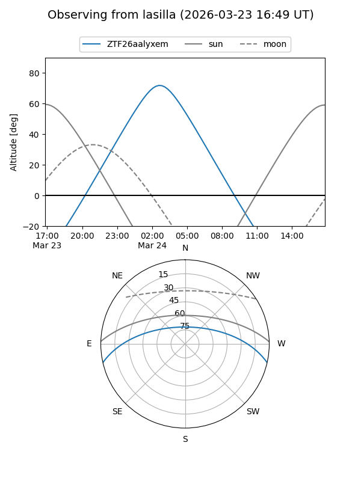
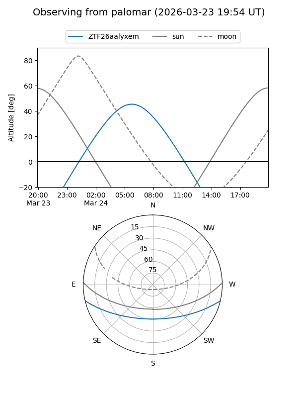
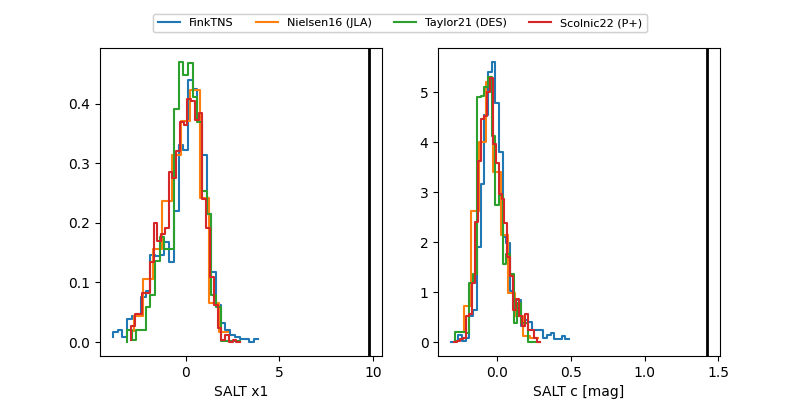

ZTF26aalyxem
Target ZTF26aalyxem at 2026-03-24 08:48
Aliases and brokers:
FINK: link
Lasair: link
ALeRCE: link
alt names
ZTF26aalyxem (ztf,fink_ztf)
Coordinates:
equatorial (ra, dec) = 150.3116,-11.04369
equatorial (HMS+DMS) = 10:01:14.79,-11:02:37.29
galactic (l, b) = (249.9358,+33.79179)
Flags:
Photometry:
last ztfg=16.64, ztfr=15.60
1 ztfg, 1 ztfr detections
Lightcurve

Visibility


Additional plots
